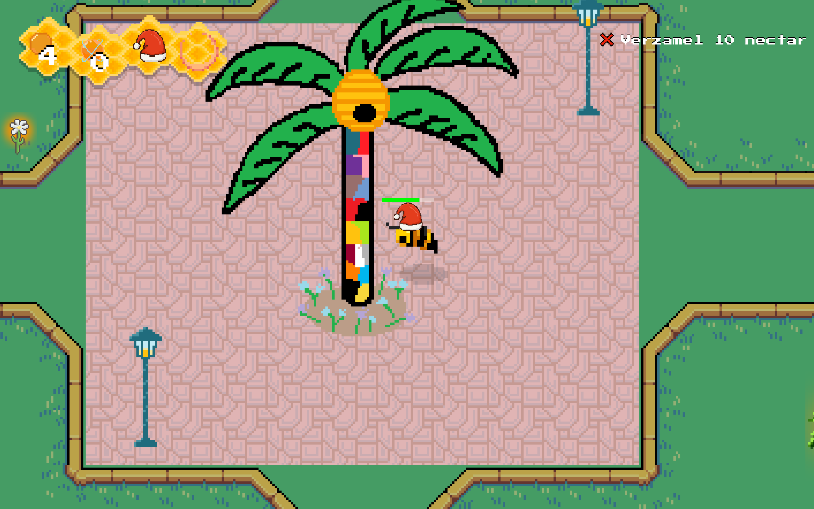

Project
HeemraadsHive
Een interactieve browsergame waarin spelers het Heemraadsplein ontdekken vanuit het perspectief van een bij.

Over dit project
HeemraadsHive is een 2D game die is gemaakt voor een schoolproject. In de game speel je als een bij die het Heemraadsplein verkent. Het doel van het project was om een interactieve game ervaring te maken waarbij de speler op een speelse manier de omgeving ontdekt. De game draait om verkennen, verzamelen en overleven, terwijl je probeert je kolonie te helpen.
Mijn rol
Dit project heb ik samen met mijn team gemaakt. Mijn bijdrage lag vooral bij de visuele kant van de game. Ik heb gewerkt aan de art, de tilemap, verschillende scènes zoals het startscherm, controls scherm en game-over scherm en ik heb ook meegeholpen met het verhaal en de presentatie van het project. Hierdoor kon ik mijn creatieve kant combineren met het maken van een speelbare game.
Wat heb ik geleerd?
Tijdens dit project heb ik geleerd hoe belangrijk structuur is bij het maken van een game. Ik heb meer geleerd over werken met Excalibur.js, scènes, assets, animaties en hoe een game stap voor stap wordt opgebouwd. Ook heb ik geleerd hoe belangrijk samenwerken en duidelijke taakverdeling is, vooral wanneer iedereen aan verschillende onderdelen van dezelfde game werkt. Een volgende keer zou ik eerder testen of alle onderdelen goed samenkomen, zodat er meer tijd overblijft om de game af te werken en te verbeteren.